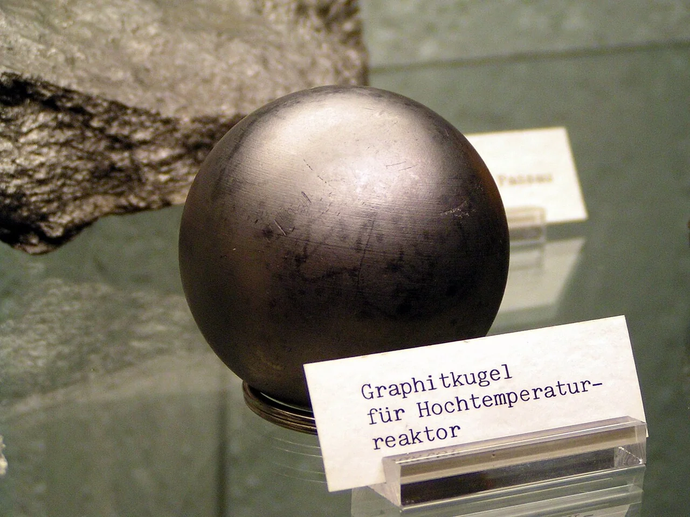
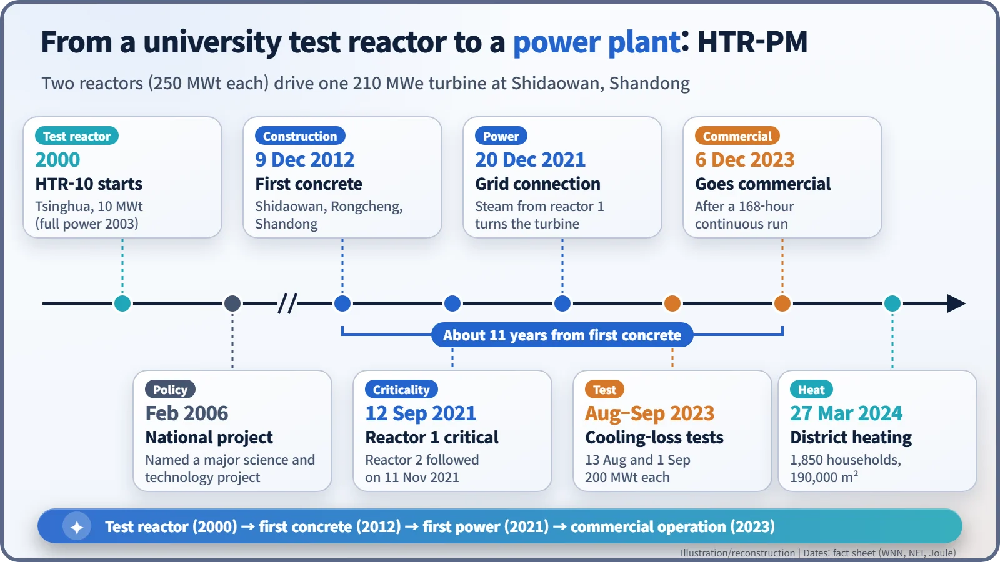
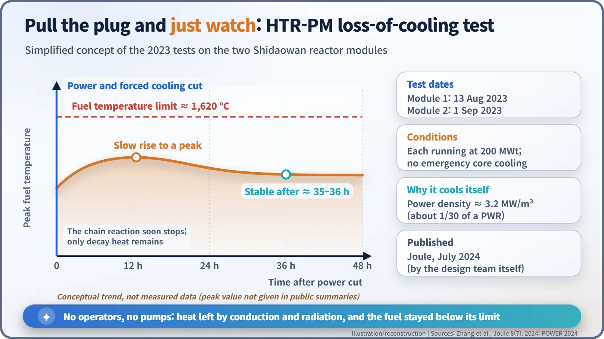

Nuclear History · 286
Pull the Plug and Watch — China's HTR-PM and the Test of a Core That Won't Melt
Two reactors, one turbine, nearly half a million graphite pebbles, and a test in which operators cut the cooling and simply waited.
HTR-PM at Shidaowan in Shandong, China, is the world's first commercial-scale modular pebble-bed high-temperature gas-cooled reactor: two 250 MW (thermal) reactors drive one 210 MWe turbine. It was first connected to the grid in December 2021 and entered commercial operation on 6 December 2023. In August and September 2023 its operators cut power and forced cooling to each reactor and let them cool down on their own, with no emergency core cooling, a test published in Joule in July 2024.
Pull the plug, then do nothing
On 13 August 2023, at the Shidaowan nuclear plant on the tip of China's Shandong peninsula, operators took a reactor running at 200 megawatts of heat, cut its power and its forced cooling, and then did nothing. They did not start the emergency core cooling system. About three weeks later, on 1 September, they did the same thing to the reactor next door. [1] [2]
For a large water-cooled plant that would be unthinkable. Three Mile Island and Fukushima showed what happens when such a reactor loses its cooling. The plant that dared to try it is HTR-PM, the world's first commercial-scale modular pebble-bed high-temperature gas-cooled reactor.
A German idea, picked up in Beijing
Reactors fuelled with graphite balls poured into the core like gumballs into a machine, known as "pebble beds", were pioneered in West Germany and then abandoned there. The baton passed to Tsinghua University's Institute of Nuclear and New Energy Technology (INET). Its 10-megawatt (thermal) test reactor, HTR-10, started up in 2000 and reached full power in 2003, teaching the team how to run a core in which fuel balls slowly cycle through. [3]
In February 2006 China's State Council named the small high-temperature reactor one of its National Major Science and Technology Projects. China Huaneng Group (47.5%) led the demonstration plant, with China Nuclear Engineering Corporation, a CNNC subsidiary (32.5%), and Tsinghua's INET (20%). [7] [4]
Two reactors, one turbine, a quarter of a million pebbles each
HTR-PM looks unusual on paper. Two reactors of 250 MW thermal each make steam together for a single turbine rated at 210 MWe. Each reactor holds about 245,000 fuel pebbles, 6 cm across. [7]
Every pebble carries 7 grams of uranium enriched to 8.5%, divided among some 12,000 coated particles (TRISO fuel) smaller than a peppercorn and embedded in graphite. Each particle has four ceramic layers designed to hold radioactive fission products in place up to about 1,620 °C. Helium flows between the pebbles and leaves the reactor at about 750 °C, at a pressure of 7 MPa. That is more than twice the roughly 300 °C of the water in an ordinary light-water reactor, which means hotter steam, better efficiency and heat good enough for industry. [4] [7]

Eleven years from first concrete
The first concrete was poured on 9 December 2012. Reactor 1 reached first criticality, a self-sustaining chain reaction, on 12 September 2021, and reactor 2 on 11 November 2021. Steam from reactor 1 turned the turbine and sent power to the grid on 20 December 2021, and both reactors reached initial full power on 9 December 2022. [3] [8]
On 6 December 2023, after a 168-hour continuous run, the plant was declared in commercial operation, about eleven years after construction began. The owners reported a 93.4% domestic equipment share and more than 500 participating companies. [4] [2]

Test day: cut, watch, wait
When the power went, the blowers that drive the helium stopped. As the core warmed, the chain reaction died away on its own: hotter uranium absorbs more neutrons (a negative temperature coefficient), so the reactor shut itself down without control rods being inserted.
The real danger in any reactor is what comes next: decay heat, the heat that radioactive fission products keep releasing after shutdown. HTR-PM is designed to shed it with no pumps and no operators. Its core produces only about 3.2 MW per cubic metre, about one-thirtieth of a pressurised water reactor, and the core is tall and slender, so heat can travel by conduction and radiation through the graphite and the vessel wall to the outside. Think of a large, warm stone floor rather than a furnace. [2]
The results appeared in the journal Joule in July 2024. The team wrote that "the reactor modules were naturally cooled down without emergency core cooling systems." They watched for about two days; reports say temperatures had stabilised within about 35 to 36 hours. [1] [2]

Before you say "meltdown-proof"
Headlines called it a reactor that "can't melt down". More precisely, the tests showed for the first time at commercial scale that, after a loss of cooling at 200 MW thermal, the fuel stayed below its limit. They did not cover other scenarios, such as air or water getting into the core. The results also come from the design team itself and have not been independently reproduced.
There are critics. Rainer Moormann, a researcher known for documenting problems at Germany's AVR, argued in a 2018 paper that HTR-PM needed additional safety measures based on AVR experience. And economics remain a challenge: even the paper's authors say generating costs are about 20% higher than for a commercial PWR, and that mass production will be needed to close the gap. [8] [2]
Where do the pebbles roll next?
Since 27 March 2024, some of HTR-PM's steam has also heated homes: 1,850 households, about 190,000 square metres, in the Shidaowan area. Huaneng called it the first time "a fourth-generation nuclear energy heating system has realised heating for urban residents." [5]
A larger version, HTR-PM600 (six of the same reactor modules driving one turbine of about 650 MWe), has been studied for several sites, but as of November 2026 no construction start had been reported. Meanwhile the Xuwei project in Lianyungang, Jiangsu, approved in August 2024, pairs two Hualong One pressurised water reactors with a 660 MWe high-temperature gas-cooled unit to supply steam to a petrochemical complex. First concrete for Hualong One unit 1 was poured in January 2026; a start on the gas-cooled unit had not been confirmed as of November 2026. [7] [6]
The pebbles that stopped rolling in Germany rolled again by the Yellow Sea, and survived a day and a half with the plug pulled. Whether they can also climb the hill of cost is the next chapter.